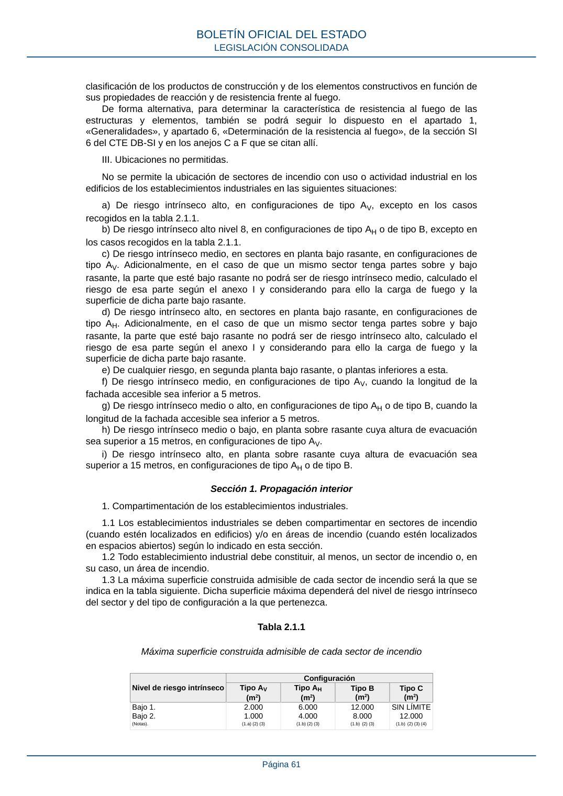

RSCIEI · edición 2025-04-10 · capa asociada
Documento RSCIEI-asociada · SHA-256 del PDF 85aa0af25d51e5b58d8975a4eefbf76d3f57a8933445cfe814ae9c4818a2e3e7
Copia fiel del PDF fuente · Fuente oficial
Ficha de la disposición en la fuente oficial
Texto extraído y reorganizado: Basado en datos de la Agencia Estatal Boletín Oficial del Estado. PDF reproducido: Fuente de los datos: Agencia Estatal Boletín Oficial del Estado.
Formatos: JSON del segmento · Markdown
ANEXO II Requisitos constructivos de los establecimientos industriales A continuación, se describen los requisitos constructivos que deben cumplir los establecimientos industriales en relación con su seguridad contra incendios. Dichos requisitos dependerán de la caracterización realizada previamente según el anexo I. I. Definiciones. Se establecen las siguientes definiciones: a) Fachada accesible: Se consideran fachadas accesibles de un edificio o establecimiento industrial, a aquellas que dispongan de huecos que permitan el acceso desde el exterior al personal de los Servicios de Extinción de Incendios y Salvamento, debiendo dichos huecos cumplir las condiciones señaladas en la sección 4, apartado 2 del presente anexo. b) Estructura portante: Se entenderá por estructura portante de un edificio a la constituida por los siguientes elementos: forjados, vigas, soportes y estructura principal y secundaria de cubierta. c) Cubierta ligera: Se entiende como ligera a aquella cubierta según se define en la tabla 3.1 del apartado 3.1.1 del Documento Básico «Seguridad Estructural Acciones en la Edificación» (DB-SE-AE) del CTE. Adicionalmente, se tomarán las siguientes definiciones del CTE DB-SI, en su anejo SI A, «Terminología»: i. Altura de evacuación. ii. Escalera abierta al exterior. iii. Escalera especialmente protegida. iv. Escalera protegida. v. Espacio exterior seguro. vi. Origen de evacuación. vii. Pasillo protegido. viii. Reacción al fuego. ix. Recorrido de evacuación. x. Recorridos de evacuación alternativos. xi. Resistencia al fuego. xii. Salida de edificio. xiii. Salida de emergencia. xiv. Salida de planta. xv. Sector bajo rasante. xvi. Vestíbulo de independencia. xvii. Zona de ocupación nula. xviii. Zona de refugio. II. Condiciones del comportamiento ante el fuego de los productos de construcción y elementos constructivos. En este anexo se establecen los requisitos de comportamiento ante el fuego (resistencia al fuego y reacción al fuego) que deben cumplir los productos de construcción y elementos constructivos. Dichos requisitos se basan en las clasificaciones europeas de resistencia o reacción al fuego y se definen estableciendo las prestaciones mínimas que los productos deben alcanzar para las características esenciales correspondientes, según lo dispuesto en el Reglamento (UE) 2024/3110 del Parlamento Europeo y del Consejo, de 27 de noviembre de 2024, por el que se establecen reglas armonizadas para la comercialización de productos de construcción y se deroga el Reglamento (UE) n.º 305/2011, o en su caso, en el Reglamento (UE) n.º 305/2011 del Parlamento Europeo y del Consejo, de 9 de marzo de 2011, para los productos con marcado CE. En caso de no disponer de marcado CE, dicha clasificación se obtendrá según lo recogido en el Real Decreto 842/2013, de 31 de octubre, por el que se aprueba la BOLETÍN OFICIAL DEL ESTADO LEGISLACIÓN CONSOLIDADA Página 60 clasificación de los productos de construcción y de los elementos constructivos en función de sus propiedades de reacción y de resistencia frente al fuego. De forma alternativa, para determinar la característica de resistencia al fuego de las estructuras y elementos, también se podrá seguir lo dispuesto en el apartado 1, «Generalidades», y apartado 6, «Determinación de la resistencia al fuego», de la sección SI 6 del CTE DB-SI y en los anejos C a F que se citan allí. III. Ubicaciones no permitidas. No se permite la ubicación de sectores de incendio con uso o actividad industrial en los edificios de los establecimientos industriales en las siguientes situaciones: a) De riesgo intrínseco alto, en configuraciones de tipo AV, excepto en los casos recogidos en la tabla 2.1.1. b) De riesgo intrínseco alto nivel 8, en configuraciones de tipo AH o de tipo B, excepto en los casos recogidos en la tabla 2.1.1. c) De riesgo intrínseco medio, en sectores en planta bajo rasante, en configuraciones de tipo AV. Adicionalmente, en el caso de que un mismo sector tenga partes sobre y bajo rasante, la parte que esté bajo rasante no podrá ser de riesgo intrínseco medio, calculado el riesgo de esa parte según el anexo I y considerando para ello la carga de fuego y la superficie de dicha parte bajo rasante. d) De riesgo intrínseco alto, en sectores en planta bajo rasante, en configuraciones de tipo AH. Adicionalmente, en el caso de que un mismo sector tenga partes sobre y bajo rasante, la parte que esté bajo rasante no podrá ser de riesgo intrínseco alto, calculado el riesgo de esa parte según el anexo I y considerando para ello la carga de fuego y la superficie de dicha parte bajo rasante. e) De cualquier riesgo, en segunda planta bajo rasante, o plantas inferiores a esta. f) De riesgo intrínseco medio, en configuraciones de tipo AV, cuando la longitud de la fachada accesible sea inferior a 5 metros. g) De riesgo intrínseco medio o alto, en configuraciones de tipo AH o de tipo B, cuando la longitud de la fachada accesible sea inferior a 5 metros. h) De riesgo intrínseco medio o bajo, en planta sobre rasante cuya altura de evacuación sea superior a 15 metros, en configuraciones de tipo AV. i) De riesgo intrínseco alto, en planta sobre rasante cuya altura de evacuación sea superior a 15 metros, en configuraciones de tipo AH o de tipo B.
